Weselne, urodzinowe, komunijne – każdy tort na indywidualne zamówienie
Klasyczny tort ze świeżych składników, dekorowany według życzenia. Idealne na urodziny, rocznice i inne uroczystości.
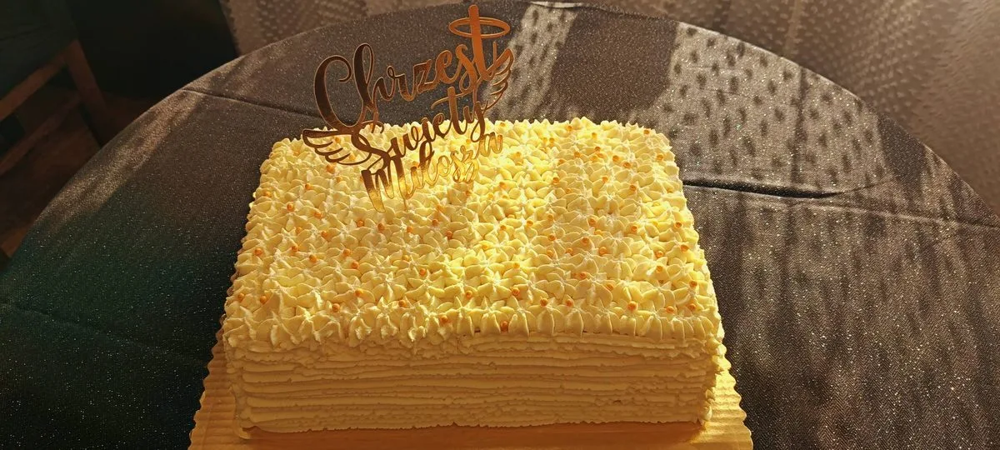
WeselnyElegancki tort weselny przygotowywany z dbałością o każdy szczegół. Smak i wygląd ustalamy razem z Państwem.
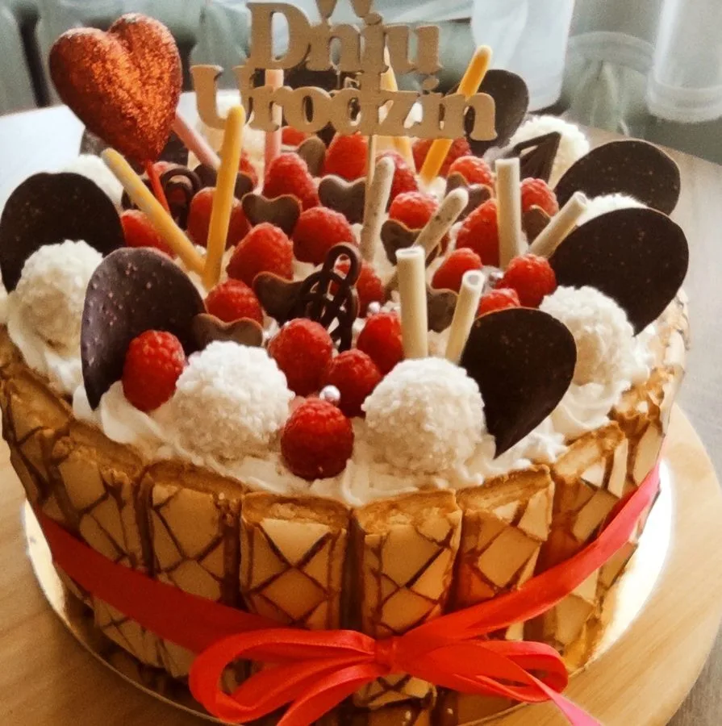
Różne smaki, różne dekoracje. Zadzwoń i omów szczegóły swojego wymarzonego tortu.
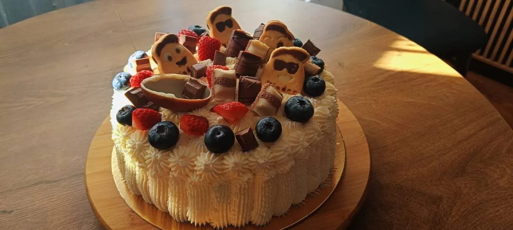
Lekki biszkopt z owocami sezonowymi i delikatnym kremem. Orzeźwiający i pięknie prezentujący się na stole.
Domowe wypieki z naturalnych składników własnego gospodarstwa
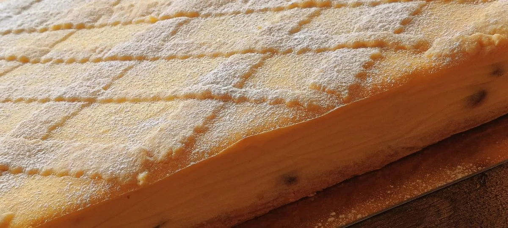
🥇 NagrodzonyNasz flagowy, nagrodzony wyrób. Najwyższe wyróżnienie na konkursie Smaki Regionów. Pieczony tradycyjną metodą, regionalny do ostatniego okruszka.
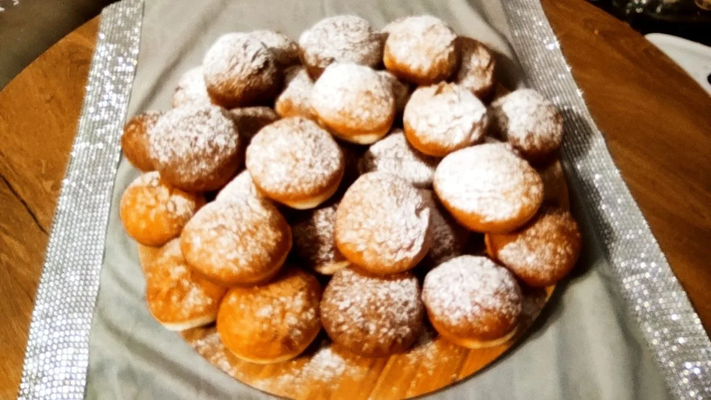
Szarlotka, makowiec, babka, piernik – tradycyjne domowe wypieki ze sprawdzonych receptur. Smak, który zna każdy Polak.
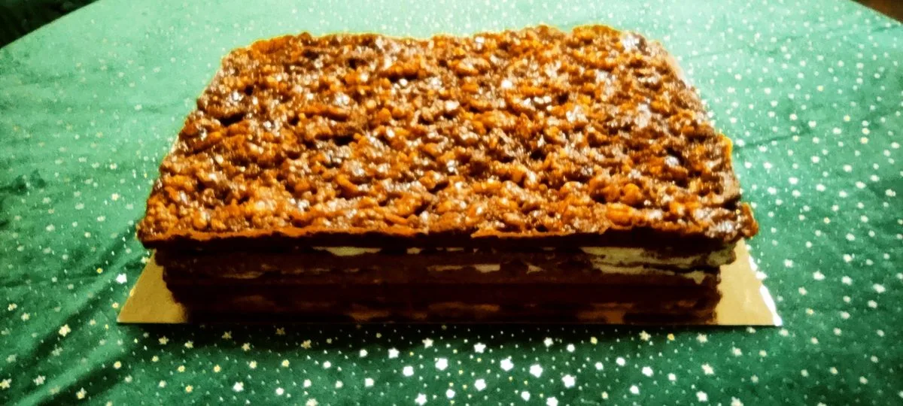
Ręcznie formowane ciasteczka kruche i inne drobne wypieki. Doskonałe na prezent lub do kawy.
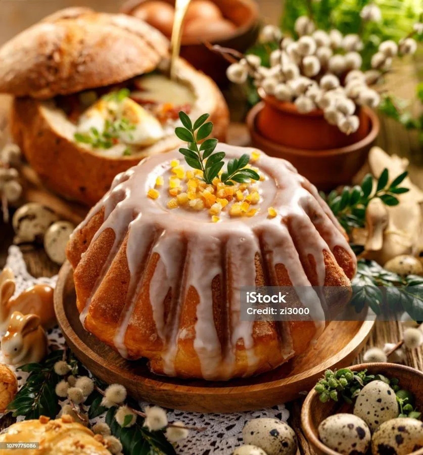
ŚwiątecznePierniczki, makowce, serniki i inne świąteczne specjalności. Dostępne sezonowo – zamów z wyprzedzeniem!
Tradycyjne wyroby z domowej kuchni i własnych upraw
Zdobywca Perły 2025 – najważniejszej ogólnopolskiej nagrody dla produktów regionalnych! Tradycyjny farsz przygotowywany z ekologicznej kaszy gryczanej niepalonej z naszych własnych upraw. Naturalny, bez konserwantów, bogaty w wartości odżywcze.
📞 Zamów →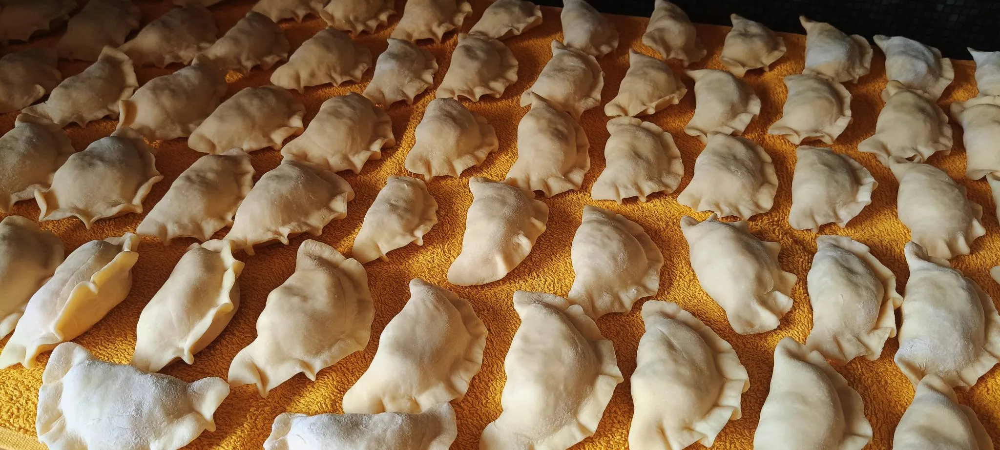
Ręcznie lepioneTradycyjne pierogi ręcznie lepione z domowym nadzieniem z kapusty i mięsa. Ze składników własnego gospodarstwa.
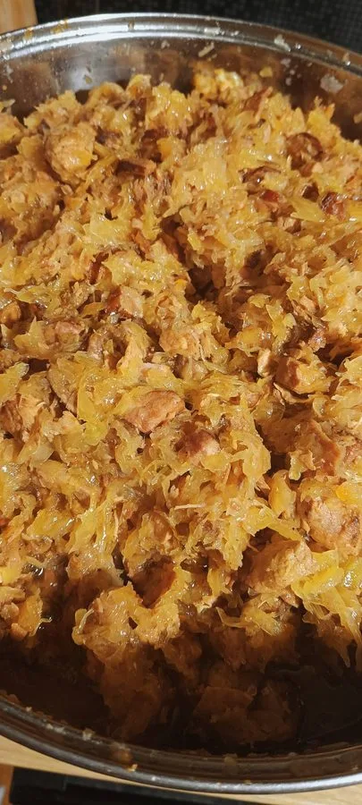
TradycyjnyTradycyjny bigos gotowany według sprawdzonej receptury z kapusty kiszonej i mięsa. Smak kuchni domowej.
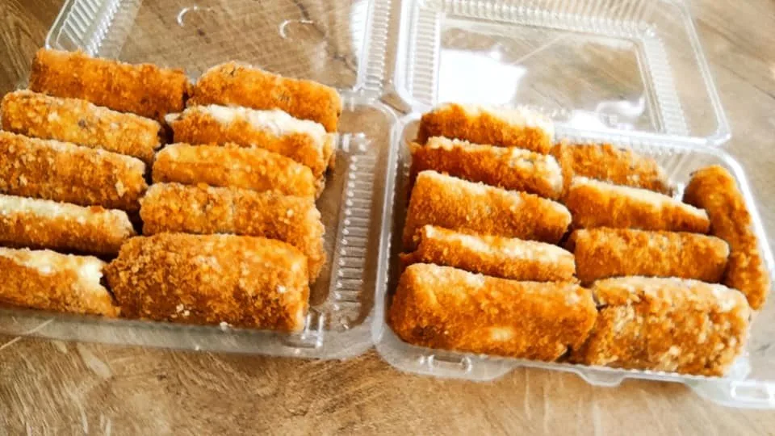
Oferta garmażeryjne zmienia się z porami roku. Zadzwoń i zapytaj o aktualnie dostępne wyroby.
Domowe pieczywo z mąki własnych upraw
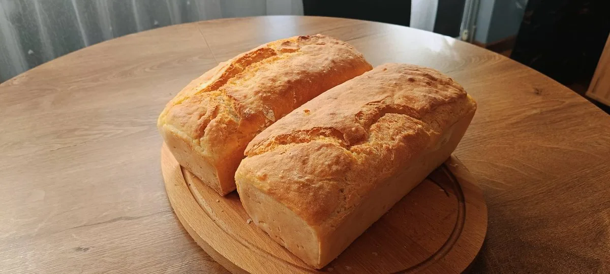
DomowyDomowy chleb wypiekany z mąki z naszych własnych upraw. Chrupiąca skórka, miękki środek. Smak prawdziwego domowego pieczywa.
Przyjmujemy zamówienia telefonicznie i przez formularz kontaktowy. Omówimy termin i szczegóły.